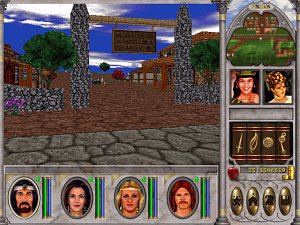
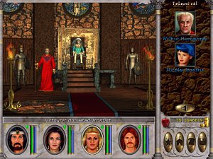
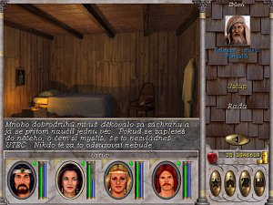
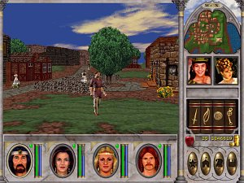
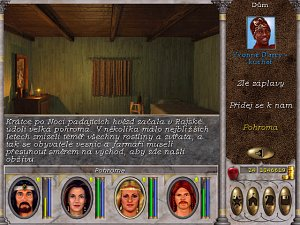
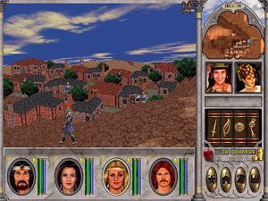
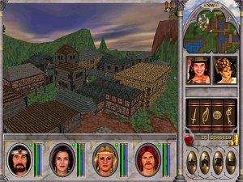
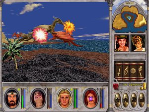

Recenze Might and Magic VI - The Mandate of Heaven
©estý díl pøedstavoval skuteèný pøelom v celé herní sáze. Opustil prostøedí DOSu a pøinesl zcela nové grafické zpracování. Celý je postaven na jednoduchém 3D enginu a pøinesl i nový pøíbìh odvozený od strategické série Heroes of Might and Magic. Díky tomuto novému pojetí se série Might and Magic opìt dostala do propøedí. V roce 2000 vy¹la jako plná hra v øíjnovém èísle èasopisu LEVEL. Díky tomu se toto výborné RPG dostalo i ke mì.
Na konci léta roku 2000 se mi povedlo vymìnit svùj starý dýchavièný poèítat na bázi Pentia I za zcela nový stroj vybavený procesorem AMD K6-2 na 500 MHz, s grafickým akcelerátorem Voodoo 3 a osazený pouhými 16 MB operaèní pamìti. Ov¹em tohle u¾ staèilo k tomu, abych si mohl bez obtí¾í zahrát tøetí díl tahovek Heroes of Might and Magic. Pøi té pøíle¾itosti jsem se dozvìdìl o existenci samostatné herní série a shodou okolností se mi na podzim dostal do rukou právì její ¹estý díl. Je¹tì dodnes si ¾ivì pamatuji na své první kroky Novým Sorpigalem a údiv nad grafickým ztvárnìním celého mìsteèka a mých prvních gobliních protivníkù. Díky øadì skrytých nápovìd v dialozích obyvatel nebylo ani tì¾ké proniknout do herního systému, i kdy¾ samozøejmì na øadu vìcí a poèáteèních omylù jsem pøi¹el a¾ mnohem pozdìji. Souèasný hráè by se nad tím mohl zcela jistì pozastavit, ale je tøeba si uvìdomit, v které dobì se nacházíme a kolik podobných her jsme mìli mo¾nost si vùbec zahrát. Pøesto¾e u¾ byl na svìtì i sedmý díl a schylovalo se k výdání osmého dílu, mìla ¹estka stále co nabídnout a hlavnì její cena v èasopise byla více ne¾ pøijatelná. Jen pro srovnání, osmý díl mì stál nìjakých 560 Kè, tedy takmìø 5x více.
Na poèátku mì pøekvapila rozlehlost dungeonù, která herní èas znaènì natahuje a místy hru neùmìrnì ztì¾uje. Je celkem frustrující, kdy¾ máte s postavami na 1 levelu projít Opu¹tìným chrámem, èi si dovolit podrobnìj¹í prùzkum Gobliní hlásky. Samozøejmì v dal¹ích hrách u¾ budete velice pøesnì vìdìt, co kde udìlat a jak si zaèátek zlehèit, ale nyní se bavíme o okam¾iku, kdy se do hry ponoøíte zcela prvnì. Ne¾ si zaènete uvìdomovat sílu jednotlivých dovedností nebo budete schopni odhadnout vliv jednotlivých vlastností na samotné postavy, uplyne mnoho èasu. Systém, na kterém je svìt Might and Magic postaven je sice slo¾itý, ale pravidla jsou zcela jasnì definována a èasem se vám vrejí pod kù¾i. Rozhodnì se vám nestane, ¾e byste si kvùli chybné volbì vývoje postav znemo¾nili hru dohrát. Mù¾ete si hraní ztí¾it, ale i velmi slabé dru¾iny mají ¹anci Enroth zachránit, jen to bude trvat o nìco déle.
Volba povolání do dru¾iny je první vìcí, která vás na poátku hry èeká. Krom toho, ¾e máte mo¾nost si dru¾inu vytvoøit sami, mù¾ete vyu¾ít i rychlého startu, kdy vám hra nabídne pøednastavenou dru¾inu. Ta je slo¾ena z povolání paladina, luèi¹tníka, klerika a èarodìje. Èasto se v¹ak na mnoha jiných místech dozvíte, ¾e pro zaèáteèníky je vhodnìj¹í jednoho z bojovníkù nahradit rytíøem, proto¾e má více bodù zdraví a nemusí dovednostní body investovat do magických dovedností, které se beztak nemù¾e nauèit. S tímto názorem v¹ak nemohu zcela souhlasit. V pøípadì luèi¹tníka a paladina vás také nikdo nenutí trénovat u nich magické dovednosti a jediný rozdíl pak bude opravdu jen v tom mno¾ství bodù zdraví. Jeden rytíø vám v¹ak ¾ivot nezachrání. A¾ pùjde opravdu do tuhého, budou umírat v¹ichni stejnì. Pokud se ho rozhodnete pou¾ít jako mistra v pomocných dovednostech, budete mu muset v øadì pøípadù dostateènì zvý¹it urèité základní vlastnosti. V pøípadì magických sudù, pak budete ztrácet potøebné body, které byste jinak mohli dát jinému povolání, napø. body Intelektu a Osobnosti. Je to tedy ponìkud sporná výhoda. Volba slo¾ení dru¾iny je èistì jen na vás. Hrou projdete i s partou kouzelníkù, a jak u¾ jsem vý¹e naznaèil, bude to jen o nìco déle trvat. Stejnì tak mù¾ete zapomenout na model klerik, èarodìj a dva bojovníci. Obejdete-li se bez bílé a èerné magie, nahradíte klerika a èarodìje druidem, který ke v¹emu mù¾e ovládat palcát a v druhé ruce dr¾et ¹tít. Tudí¾ neni to zrovna ¾ádné oøezávatko.
Ka¾dá postava mù¾e podstoupit v rámci svého povolání dvojímu pový¹ení. Pøi ka¾dém z nich se mu zvý¹í mno¾ství zdraví a many. Pøedchází tomu v¾dy zadání tzv. povy¹ovacího úkolu, který budete v tomto díle dostávat od jednotlivých Lordù a Lady Loretty Fleise. V¹ichni z nich jsou zároveò èleny Velké rady, o které si pozdìji je¹tì povíme. Ti, kterých se nebude pový¹ení pøímo týkat, tedy odli¹ná povolání, budou pový¹eni do èestné hodnosti. Opìt to vyu¾ijete u nìkterých úrovní dovednosti. Napø. mistrem magie vzduchu se mù¾e stát pouze postava s hodností Arcimága nebo Èestného Arcimága, pokud by tomu tak nebylo, mohli se mistrovské úrovni vyuèit pouze èarodìjové. Dovednosti zde také zaznamenaly jistou zmìnu. Platí, ¾e pokud se postava mù¾e danou dovednost nauèit, mù¾e v ní dosáhnout rovnou i mistrovské úrovnì. Staèí investovat pøíslu¹ný poèet bodù a pøípadnì je¹tì splnit doplòující podmínky.
Ke zvy¹ování bodového ohodnocení dovedností slou¾í tzv. dovednostní body, které budete získavat výmìnou za zku¹enostní body pøi tréninku ve cvièírnách. Jakmile jich máte dostateèný poèet, mù¾ete je rozdìlit mezi jednotlivé dovednosti. Ov¹em musíte si dávat dobrý pozor, ke zvý¹ení potøebujete pøesnì stejnì bodù, jako je velikost dovednosti, ne kterou zvy¹ujete. S rostoucí velikostí dovednosti tedy bude výraznì rùst i spotøeba zku¹enostních bodù. Na druhou stranu nemá smysl to s velikostí dovednosti pøehánìt, zcela postaèí, pokud si ji zvý¹íte jen do té míry, aby splòovala podmínky pro dosa¾ení expertní, popø. a¾ mistrovské úrovnì (zvy¹ování se dìje postupnì, expertní úroveò nelze pøeskoèit). Men¹í vyjímkou je dovednost Obchodování, kde pro pro bezeztrátový nákup a prodej potøebujete mít v dovednosti na úrovni mistra minimálnì 14 bodù. Samotné dovednosti se postavy uèí v rùzných gildách. V magických gildách se krom jiného uèí i dovednosti Meditace a Vzdìlávání. Pokud v¹ak chcete v dané gildì studovat, musíte se nejprve stát jejími èleny, tedy zaplatit poplatek pøíslu¹né osobì ve mìstì.
Kromì povy¹ovacích úkolù budete ve høe dostávat i ostatní úkoly. Po jejich splnìní budete odmìnìni zku¹enostmi a mnohdy i zlatem. Ne v¾dy budete moci pøíslu¹ný úkol splnit ihned, proto¾e na to nebudete dostaèovat svou úrovní. Úkol se vám v¹ak zapí¹e do deníku a budete si moci jeho zadání kdykoliv pozdìji znovu pøipomenout. V deníku bohu¾el postrádám zápis pøíbìhové linie, tak jako je tomu u dílù následujících, co¾ je docela ¹koda, proto¾e jinak zde naleznete prakticky v¹e. Krom zmínìných úkolù se vám zde bude zapisovat pøehled umístìní jednotlivých expertù a mistrù dovedností, budou zde zapsány texty z obeliskù a uvidíte zde úspì¹né kombinace lektvarù, které se vám podaøí namíchat. Alchymie jako taková ve høe neni, míchat lektvary mù¾e ka¾dá postava a máte k tomu k dispozici je tøi mo¾né ingredience. Nejvy¹¹í mo¾né lektvary tvoøí opìt elixíry, èerné lektvary, s trvalými úèinky.
Je na èase zmínit se také o pøíbìhu, který je se ¹estým dílem spojen. V¹emu na úplném poèátku pøedchází poslední události z pøíbìhové linie Heroes of Might and Magic. Král Roland je poblí¾ Kriegpire pøemo¾en a zajat armádami Kreeganù, Lord Kilburn padnul v bitvì u Blackshire a královna Catherine musí urychlenì odplout do Erathie na pohøeb svého otce. Na hradì Ironfist nechává svého syna prince Nicolaie a jako poruèíka mu urèuje nejvy¹¹ího paladina Enrothu, regenta Wilbura Humphrey. Bìhem intra budete seznámeni s va¹ím osudem, který je spojen s Nocí padajících hvìzd, kdy jste svìdky pádu Dobré vody. S pomocí Falagara uteèete a naèas se stáváte jeho ¾áky. Jakmile vás nauèí v¹e, co mù¾e objevíte se pøed branami Nového Sorpigalu a tím zaèíná va¹e dobrodru¾ství. V ruce máte jen dopis proradného zrádce jako dùkaz pro regenta a jakmile ho pøedáte, budete seznámeni s úkoly Rady. Díky ní se budete moci dostat k Orákulu a ve finále zachránit Enroth. Cesta nebude rozhodnì pøímoèará a mnohdy si znaènì zajdete. Postupnì pøitom budete rozplétat dùkazy o stra¹livém spiknutí. Pøíbìh je dostateènì zajímavý a je vhodnì doplòován i dialogy obyvatel Enrothu, kteøí vám budou postupnì osvìtlovat urèité události a lehce vás seznámí i s historií.
Hra je doprovázena zdaøilým hudebním doprovodem a ve høe postøehnete i øadu efektù souvisejících s poèasím. Na severu snì¾í, v blatech se setkáte s ranní mlhou apod. Hardwarová nároènost pøitom nebyla ani na tehdej¹í dobu pøehnaná. V dne¹ní dobì v¹ak zápasíme s nedostateènou kompatibilitou s verzemi Windows XP. Pøesto¾e ji na rozdíl do novìj¹ích dílù bez obtí¾í spustíte, bude èasto bez dùvodu padat. Problém pøedstavují i oba døíve vydané patche, proto¾e s nejnovìj¹ím patchem si do hry zanese chyby jiné. Vydaná èe¹tina je na¹tìstí kompatibilní s obìma, tak máte alespoò o starost ménì. U Windows XP budete ochuzeni i o hudbu a nìkteré doprovodné zvuky, co¾ jsem naposledy docela postrádal. Budete tak ochuzeni o èást podmanivé atmosféry hry.
Na závìr bych se mìl nejspí¹e pokusit o struèné shrnutí, ale zcela urèitì bych nebyl dostateènì objektivní. ©estý díl osobnì pova¾uji za nejlep¹í a v mnohém se na tom podepsalo i to, ¾e to byl mùj první díl, který jsem mìl mo¾nost hrát a zároveò to byla jedna z prvních her, kterou jsem skuteènì dohrál. Hra mi také otevøela cestu do svìta RPG a u tohoto ¾ánru jsem vydr¾el dodnes. V dobì dne¹ních her v¹ak nemù¾e obstát v konkurenci a zcela urèitì by u "moderního" hráèe neobstála. Nový herní svìt se bohu¾el pøíli¹ upíná na grafický vzhled a akènìj¹í pøístup, co¾ Might and Magic 6 na¹tìstí nesplòuje. Celá situace je navíc ztí¾ena zmínìnou nekompatibilitou, hra je plnì kompatibilní jen s Windows 9x, které jsou v¹ak ji¾ na ústupu. Pro skuteèného pøívr¾ence klasického RPG a dungeonù je to v¹ak dobrá volba a tento díl mohu jen doporuèit. Urèitì nebudete zklamáni.
21.4.2007